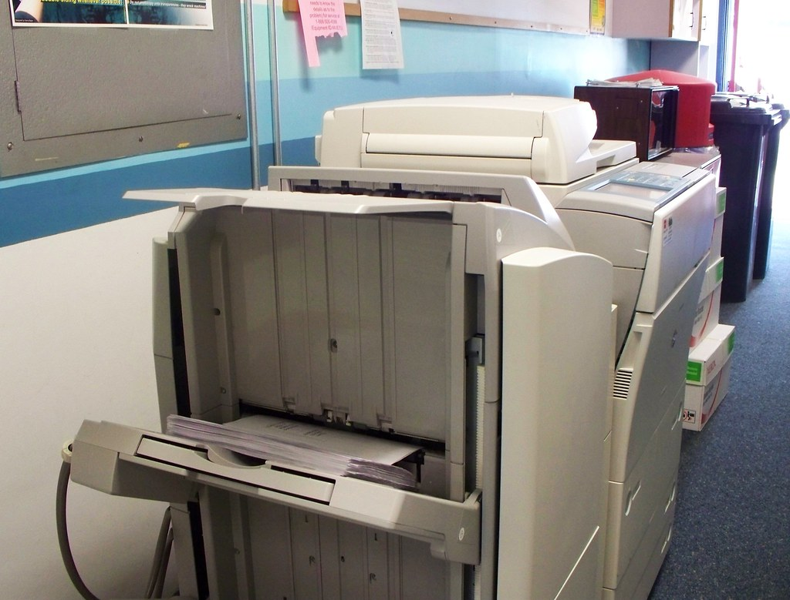

10月20日、デジタル庁が政府職員向けの生成AI環境「源内」で、AIエージェントの利用環境の提供を始めました。同じ日に、使い方のルールをまとめた「源内基準」も公表されています。対象は約18万人の政府職員、基準の本文は53ページあります。
この記事は、社内の作業をAIに任せ始めた中小企業の方に向けて書きます。基準のPDFを開いて読み、自社の社内ルールにそのまま写せる条文を抜き出しました。報道のまとめではなく、公表された文書の本文から引いています。
何が公表されたのか
源内に加わったのは2つです。ファイル参照やWeb検索を含む複数段階の処理をAIにやらせる「エージェントチャット」と、調査から試作まで利用者自身が行えるAIコーディングエージェント環境「源内工房」。エージェントチャットは各府省庁へ順次導入、源内工房は令和8年12月頃までの導入を目指すと書かれています。
源内基準は、関わる人を利用者、管理者、開発者の3つに分け、それぞれの守るべきことを書き分けています。そして概要資料には、AIエージェントの導入を検討する地方公共団体や民間事業者にとっても参考となるもの、と明記されています。基準の本文にも、民間企業その他の組織がAI利用環境の整備を検討する際の参考となるようにする、とあります。読まれる前提で書かれた文書です。
さらに、この利用環境自体が2027年2月を目途に、商用利用が可能なライセンスで「源内OSS Ver.2.0」として無償公開される予定です。利用、改変、再配布ができる形になります。
自社のルールに写せる4つ
1つ目。原本のファイルをAIに触らせない。エージェントチャットでは、AIが上書きまたは削除できる対象が、AIが生成したファイルに限定されています。利用者がアップロードした原本は、AIが上書き・改変できません。上書きが必要なときは、システムが原本を自動で複製し、複製のほうを上書きします。
2つ目。強い機能は、初期状態で使えなくしておく。源内工房は初期状態では利用不可です。リテラシーチェックなどで一定の水準を満たしていると確認できた職員の申請を受けて、管理者が権限を付与して初めて使えます。全員に一斉に配る形にはなっていません。
3つ目。出口を塞ぐ。源内工房では、外部へのデータ送信(POST/PUTなど)をシステム上で遮断しています。利用者が意図したかどうかに関係なく、外に書き出せません。Web検索に必要なGETは許可する代わりに、通信先、通信量、通信日時をログに記録し、あとから確認できる設計としています。
4つ目。これはそのまま掲示できます。「AIの出力結果を職員が確認しないまま、行政資料や公文書への直接の転記はしないこと」。自社の文書に言い換えれば、見積書、提案書、顧客への返信が当てはまります。
費用についても書いてあります。出力だけでなく入力にも課金されることを十分に認識したうえで、処理の難易度や求める精度に応じ、過剰に高性能でない基盤モデルを選ぶこと。冗長な指示や不要な文書の貼り付けを避けること。国がここまで書いているのは、18万人分の従量課金を毎月払うからです。
国も、決めきってはいない
正直なところも書いておきます。各府省庁の管理者が、利用者を止めたり、費用を見られる人を決めたり、使えるモデルを選んだりする「テナント管理者機能」は、提供することを検討する、という段階です。提供されるまでの間、利用を止める措置は、報告を受けたデジタル庁が代わりに行うと書かれています。
18万人に配る本人たちでも、配ったあとに止める手元のスイッチは後から付く。政府方針でも、本格利用の開始は令和9年度以降に検討すると書かれていて、今は実証の最中です。
ここは責めるところではなく、参考にするところだと思っています。完成したルールが出てくるのを待ってから配り始めるのではなく、配りながらルールを書いて、公表している。中小企業がAIを入れるときも同じで、完璧な社内規程を待つと、いつまでも始まりません。
今日やれること
AIに読ませたり書かせたりしているファイルを1つ開いて、それが原本かどうかを見てください。原本なら、コピーを1つ作って、そちらをAIに渡す。1つ目の条文は、それだけで自社でも成立します。
ルールを1枚先に決めておくと、AIが出したものを毎回ゼロから疑い直さずに済みます。確かめる場所が決まっているからです。そこで浮いた時間を、確認の作業ではなく、次に何をやるかを考えるほうに回せます。
出典
デジタル庁「ガバメントAI 源内 ガバナンス・セキュリティ・セーフティに関する基準(源内基準)」2026年10月20日公表(一次資料、本文53ページ)
https://www.digital.go.jp/policies/genai/agent-safety-standard
デジタル庁「ガバナンス・セキュリティ・セーフティに関する基準(源内基準)の策定・公表について」2026年10月20日(概要資料)
デジタル庁「ガバメントAI 源内」政策ページ
https://www.digital.go.jp/policies/gennai
第II期人工知能基本計画(2026年7月14日閣議決定)、デジタル社会の実現に向けた重点計画(2026年7月21日閣議決定)。いずれも源内基準の概要資料に抄録が掲載されています。
この記事と同じ内容を、公式noteでも公開しています。 公式note 記事一覧